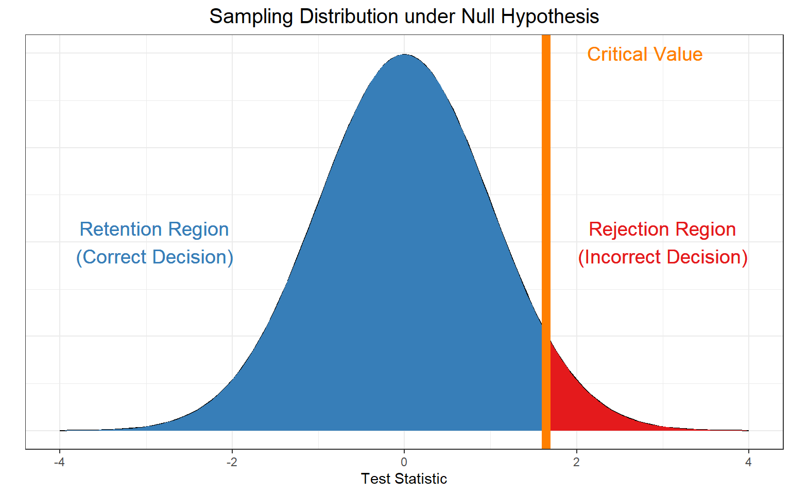
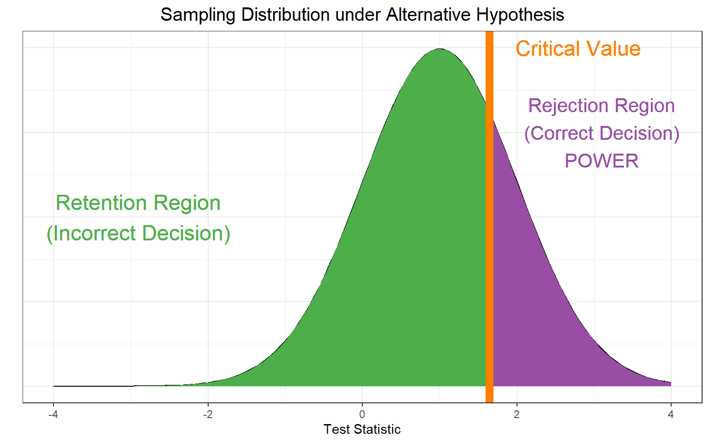
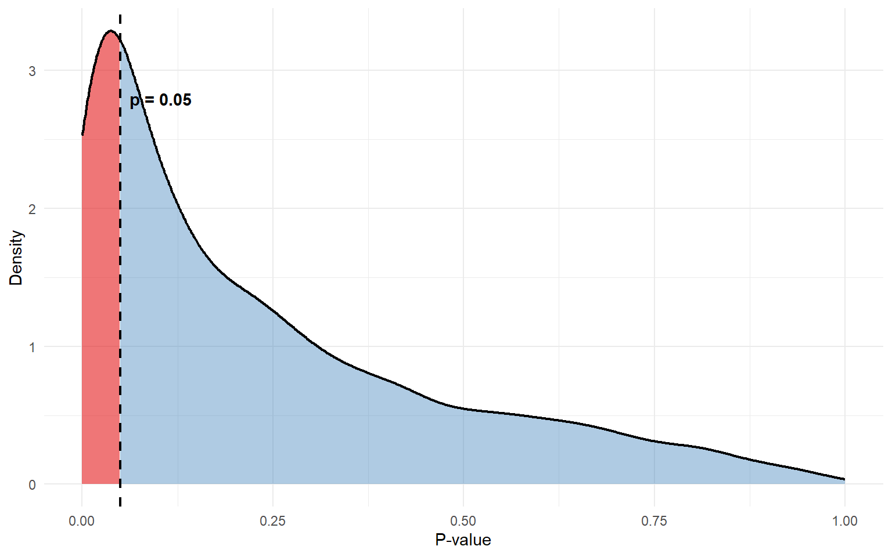
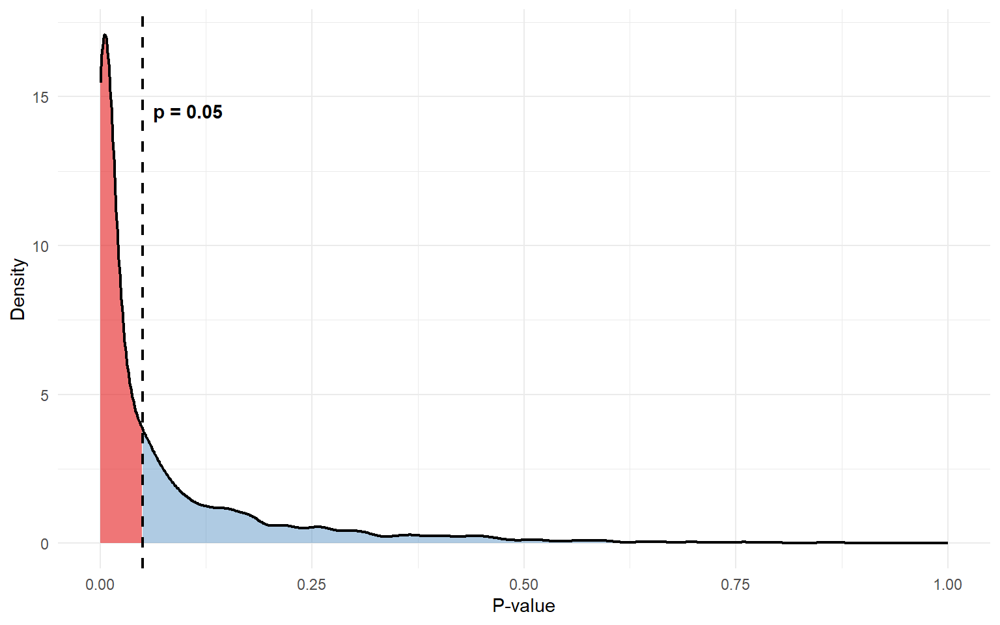
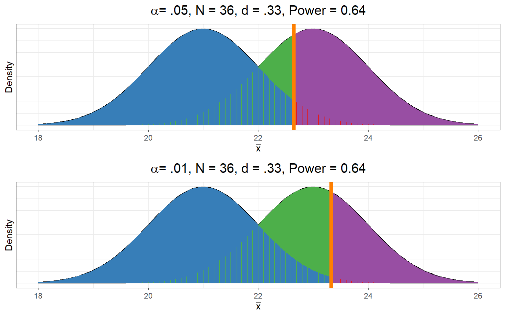
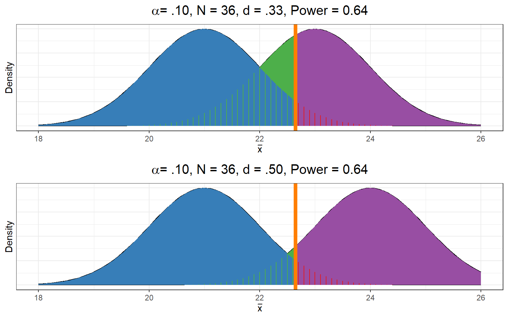
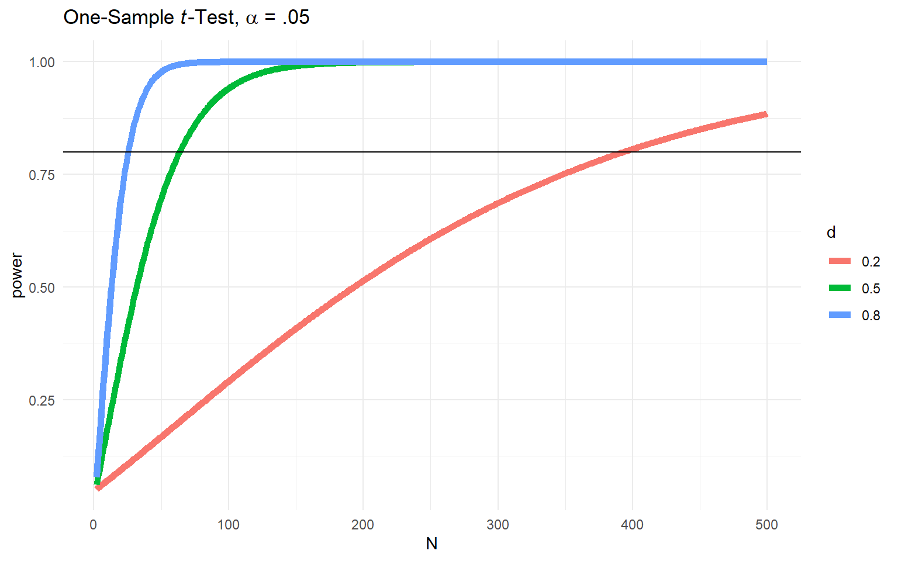

Lecture 10: Power and Power Analysis
Review: Null Sampling Distribution
onsider a one-sample \(z\)-test: \[H_0: \mu \leq 0\] \[H_a & \mu > 0\]
\(\mu\): Actual population mean
\(\mu_0\): Population mean proposed by null hypothesis (null mean)
If \(\mu - \mu_0\), we already know the null sampling distribution of \((\bar{x})\)
If \(\mu_0 = 0\), then sampling distribution of \(\bar{x}\) is symmetric about 0
\(z_{\text{obs}} = \bar{x} / \sigma_{\bar{x}} \sim N(0, 1)\)
If we use our standard \(\alpha = .05\) then….
Probabilities Under the Null Hypothesis
A Thought Experiment
Let’s now do a thought experiment. In this thought experiment, we are omnipotent, and can take a “God’s eye view” of the situation.

Let’s imagine a world where we know the true parameter \(\mu = 1\) and \(\sigma = 10\).
- Put another way, we know the true effect size is \(d = \frac{\mu - \mu_0}{\sigma} = \frac{1-0}{10} = 0.1\)
It also means:
The sampling distribution of \(\bar{x}\) is symmetric about 1
If we collected repeated samples of size 100, that means \(\sigma_{\bar{x}} = \frac{10}{\sqrt{100}} = 1\) and \(\bar{x} \sim N(\mu_{\bar{x}} = 1, \sigma_{\bar{x}}=1)\)
We can plot the sampling distribution for the true case as well, and see how often we would reject \(H_0: \mu = 0\) when we actually know that \(\mu = 1\)
Repeated: Probabilities Under the Null Hypothesis

Probabilities Under the “Truth”

Directly Comparing

Decisions and Errors
Possible Outcomes
| Retain \(H_0\) | Reject \(H_0\) | |
|---|---|---|
| \(H_0\) True | Correct decision | Type I error |
| \(H_0\) False | Type II error | Correct decision |
Associated Probabilities/Proportions
| Retain \(H_0\) | Reject \(H_0\) | |
|---|---|---|
| \(H_0\) True | \(1-\alpha\) | \(\alpha\) |
| \(H_0\) False | \(\beta\) | \(1-\beta\) (Power) |
Technical Definition of Statistical Power
Power Analysis: Assume that there is some true value for \(\mu \neq 0\) (\(H_{true}\)). How likely it is you would correctly reject the null hypothesis if this was the case?
Keep in mind the frequentist idea of conducting multiple hypothetical experiments
Imagine many experiments for which \(H_{true}\) is true
Conduct the hypothesis test (against \(H_0\)) a large number of times
What proportion of these hypothesis tests are rejected?
Power is the proportion of repeated experiments that correctly reject \(H_0\)
The probability is associated with with the procedure of repeated experiments, not a particular data set
Power Simulation Setup
I will use the following to simulate power:
- \(N = 16\) (in repeated experiments)
- \(\mu_0 = 0\)
- \(\mu_1 = 1\) (true \(\mu\))
- \(\sigma = 4\)
- \(\sigma_{\bar{x}} = \frac{\sigma}{\sqrt(N)} = \frac{4}{\sqrt(16)} = 1\)
N <- 16 # sample size
mu0 <- 0 # null mean
mu1 <- 1 # true population mean
sigma <- 4 # so that sigma / sqrt(N) = 1Power Simulation
set.seed(123) # set a seed to reproduce this example
pvals <- numeric(5000) # empty numeric vector with 5000 slots
for(i in 1:5000){ # 5000 repeated experiments
x <- rnorm(n = N, mean = mu1, sd = sigma) # generate data from H1
zobs <- (mean(x) - mu0) / (sigma / sqrt(N)) # calculate test statistic
pvals[i] <- pnorm(zobs, lower.tail = FALSE) # calculate p-value
}What proportion of my \(p\)-values are \(< .05\) (correct rejections)
[1] 0.2614Distribution of \(p\)

Increasing Power
Our statistical power here was .26
- We only correctly reject the null hypothesis 26% of the time, not great!
How might we increase it?
- Increase \(N\)
- Increase effect size
- Decrease \(\alpha\)
We can tweak any of these in our simulation, which are in our control as the experimenter?
- If we have the resources, we can increase \(N\)
- If we are willing to accept a higher chance of a Type I error, we can decrease \(\alpha\)
Increasing Sample Size Increases Power
Null sampling distribution:
\[\bar{x} \sim N\left(\mu_0, \frac{\sigma}{\sqrt{N}}\right)\] “True” sampling distribution:
\[\bar{x} \sim N\left(\mu_1, \frac{\sigma}{\sqrt{N}}\right)\]
Increasing \(N\) will shrink the standard error, increasing the distance between the two distributions
Increasing \(N\)

Increasing \(N\) Simulated
N <- 64 # instead of 16
mu0 <- 0 # null mean
mu1 <- 1 # true population mean
sigma <- 4 # so that sigma / sqrt(N) = 1
set.seed(123) # set a seed to reproduce this example
pvals <- numeric(5000) # empty numeric vector with 5000 slots
for(i in 1:5000){ # 5000 repeated experiments
x <- rnorm(n = N, mean = mu1, sd = sigma) # generate data from H1
zobs <- (mean(x) - mu0) / (sigma / sqrt(N)) # calculate test statistic
pvals[i] <- pnorm(zobs, lower.tail = FALSE) # calculate p-value
}
mean(pvals < .05)[1] 0.643Increased \(N\) Visualized

Decreasing \(\alpha\) Decreases Power
The Type I error rate \(\alpha\) determines the cutoff between the acceptance and rejection regions
Increasing \(\alpha\) means you are likely to reject \(H_0\) for both the null and alternative hypothesis
Tradeoff between minimizing Type I error rate and maximizing power
Decreasing one decreases the other
Increasing one increases the other
This is why neither allowing more liberal (larger) or requiring stricter (smaller) \(\alpha\) will lead to more reliable results or more correct decisions. It will just adjust your tolerance for different types of errors
Decreasing \(\alpha\)

Increasing \(\alpha\)

Larger Effects
Null sampling distribution:
\[\bar{x} \sim N\left(\mu_0, \frac{\sigma}{\sqrt{N}}\right)\]
“True” sampling distribution:
\[\bar{x} \sim N\left(\mu_1, \frac{\sigma}{\sqrt{N}}\right)\]
- Larger differences between \(\mu_1\) and \(\mu_0\) will create larger separation between the distributions
- Larger effects \(\rightarrow\) more power
Larger \(d\)

In Practice
This demonstration used a \(z\)-test for simplicity, but only one thing changes when generalizing to more practical tests.
What changes?
The form of the sampling distribution. Instead of normal, we might use
- A \(t\)-distribution
- A \(\chi^2\)-distribution
- An \(f\)-distribution (more soon)
Power Analysis
Power analysis has four components. Our demo used a $z
Statistical power (\(1 - \beta\))
Sample size (\(N\))
Significance level (\(\alpha\))
Effect size
The idea behind power analysis, is that if you know any three of these, in most cases you can determine what the third must be at minimum / maximum.
Power Curves can show us how power changes for different combinations of each
Power Curves for \(d\)

Types of Power Analysis
| Type of Power Analysis | Input | Output |
|---|---|---|
| a priori | \(\alpha\) Statistical Power Effect Size |
Sample Size |
| Retrospective | \(\alpha\) Sample Size Effect Size |
Statistical Power |
| Sensitivity | \(\alpha\) Statistical Power Sample Size |
Effect Size |
| Criterion | Statistical Power Effect Size Sample Size |
\(\alpha\) |
| Compromise | \(\beta/\alpha\) Ratio Sample Size Effect Size |
\(\alpha\), \(\beta\) |
a priori Power Analysis
- Intended be done before data collection
- Meant to assist in deciding what sample size is needed
- Requires you to make an assumption about anticipated effect size
- Pilot study?
- Prior knowledge?
- Cohen’s benchmarks?
Sensitivity Power Analysis
- Can be done either before or after data are collected
- Typically assumes a fixed sample size
- Analyze what effect sizes can be detected at different fixed power levels. E.g.
- E.g., What is the smallest effect size you could detect with…
- …80% power?
- …95% power?
Retrospective Power Analysis
- Often (but does not have to be) done after data are collected
- Typically assumes a fixed sample size
- Analyze how much power you have to detect different fixed effect sizes
- E.g., What is your statistical power if the true population effect is…
- …\(d = .2\)?
- …\(d = .5\)?
Observed Power Analysis
- A type of retrospective power analysis
- Always after data are collected
- Calculate observed effect size from sample
- Calculate power based on observed effect size and actual sample size
STOP

Noisy Samples
Power is about detecting a population effect.
An observed effect size will almost never be exactly a population effect. It will also have sampling error
Imagine what would happen if we do an analysis, but only report results when our observed effect size implies at least 80% power, we’re going risk making way more Type I error’s than our actual \(\alpha = .05\)
Simulated Example
In this example, I’m simulating a case where the null hypothesis is true, which means we should only reject it 5% of the time.
iter <- 10000 ## number of iterations
N <- 50 ## sample size
mu <- 0 ## population mean
sigma <- 1 ## population SD
res <- logical(iter) ## Container for results
set.seed(1005)
for (i in 1:iter){
x <- rnorm(N, mu, sigma)
tt <- t.test(x, mu = 0) ## conduct t-test, H_0: mu = 0
res[i] <- tt$p.value < .05 ## Check whether we reject null at alpha = .05
}Let’s see how often we (correctly) reject the null
table(res) # did we reject the null?res
FALSE TRUE
9479 521 sum(res)/iter[1] 0.0521So far so good
File Drawer
Now let’s see what happens if I ONLY keep the times where my observed power based on each individual sample is at least 80%. All the other times, I “file drawer” my results, and no one ever sees them but me
iter <- 10000
res <- character(iter) # Empty container
set.seed(4501)
for (i in 1:iter){
x <- rnorm(N, mu, sigma)
d <- effectsize::cohens_d(x) ## observed cohen's d
## do power analysis with observed cohen's d:
pwr_res <- pwr.t.test(n = 50,
d = d$Cohens_d,
sig.level = .05,
power = NULL,
type = "one.sample")
## Save my result if it had enough power
if (pwr_res$power > .8){
tt <- t.test(x)
res[i] <- tt$p.value < .05
}
## Ohterwise file it away for none to see!
else{
res[i] <- "file drawered"
}
}Results
How often did we reject, retain, or file drawer the null?
table(res)res
file drawered TRUE
9918 82 - I never correctly retained the null hypothesis
- I incorrectly rejected it 82 times
- And the remaining 9,918 times I decided I didn’t have enough power and stuck my result in the file drawer
A Real Effect
Now let’s try an example where there is a true effect, but it’s not very big, \(D = .1\). How often we detect the effect will be our power.
mu <- .1 # now there is an actual effect
res <- numeric(iter)
ds <- numeric(iter)
set.seed(521)
for (i in 1:iter){
x <- rnorm(N, mu, sigma)
tt <- t.test(x, mu = 0)
res[i] <- tt$p.value < .05
ds[i] <- effectsize::cohens_d(x)$Cohens_d
}Real Results
Let’s look at:
- How often did we reject?
table(res) res
0 1
8943 1057 - What was our power?
sum(res)/iter [1] 0.1057- What was the mean \(d\) across samples?
mean(ds) [1] 0.09853073So far so good
Effect Inflation
Now let’s see what would happen if file drawer results where our observed effect indicated insufficient power again
iter <- 10000
ds <- numeric(iter) # Empty container
set.seed(4501)
for (i in 1:iter){
x <- rnorm(N, mu, sigma)
d <- effectsize::cohens_d(x) ## observed cohen's d
## do power analysis with observed cohen's d:
pwr_res <- pwr.t.test(n = 50,
d = d$Cohens_d,
sig.level = .05,
power = NULL,
type = "one.sample")
## Save my result if it had enough power
if (pwr_res$power > .8){
ds[i] <- d$Cohens_d
}
## Otherwise file it away for none to see! (just leave it missing)
else{
ds[i] <- NA
}
}Inflation Result
This time I just left the file drawered results as missing (NA)
Let’s look at our average \(d\) in the cases where we didn’t file drawer
[1] 0.4421423Our average 4.5x as large as the true population value! We’re way overestimating it.
Making Retrospective Power Analysis OK
The best way to do a retrospective power analysis, and report a power level with any meaning, is to do it after you have collected data (or assuming you have a given \(N\)) but before you analyze your results.
So if you know you have \(N = 50\) and want to see if you have enough power to detect an effect size of at least \(d = .2\), you can do that, but DO NOT CHECK THE SAMPLE \(d\) FIRST
If you do use the observed effect size, you’d better not be basing any of your reporting or publication decisions on the results of your power analysis! Otherwise you’re going to wind up with either or both:
- Inflated Type I error rates
- Overestimates of the true effect size